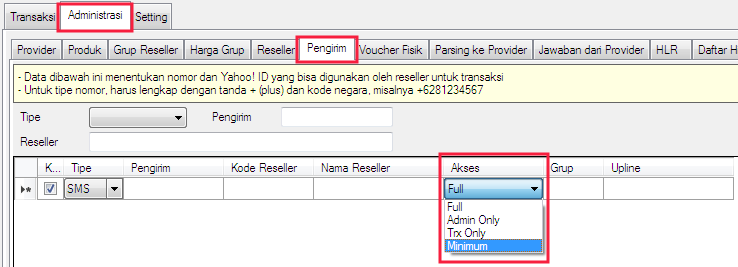

Akses Pengirim
Akses Pengirim merupakan satu dari beberapa fitur baru di OtomaX v4.0.0 klik disini, fungsinya untuk membatasi akses penggunaan pengirim berupa nomor handphone, akun Jabber/XMPP atau nomor WhatsApp (* Reseller. Misalnya nomor tertentu milik Reseller ingin dibatasi hanya dapat digunakan transaksi saja, tidak bisa dipakai untuk penggunaan yang lain, dapat memanfaatkan fitur ini. Tertarik dengan fitur ini, Anda dapat membeli OtomaX sekarang dengan klik disini.
Fitur ini berada di Administrasi -> Pengirim -> Akses, perhatikan gambar di bawah ini:

Terdapat beberapa pilihan akses yang dapat dipilih:
-
Full
artinya pengirim dapat melakukan segala hal tanpa terkecuali, bisa transaksi, bisa cek saldo, bisa cek harga, bisa cek status transaksi, bisa mengambil tiket, bisa menambah pengirim, bisa transfer saldo, bisa tarik saldo, bisa ubah markup dan seterusnya. -
Admin Only
artinya pengirim dapat melakukan segala hal kecuali transaksi. -
Trx Only
artinya pengirim hanya dapat melakukan transaksi, tidak dapat melakukan hal lain. -
Minimum
artinya pengirim hanya dapat melakukan cek (seperti cek saldo, cek harga serta cek - cek lain) dan mengambil tiket, tidak dapat melakukan hal lain.
Yang dimaksud pengirim disini ialah nomor handphone, akun Jabber/XMPP atau nomor WhatsApp (* milik Reseller yang terdaftar sebagai pengirim di OtomaX. Jika Anda mempunyai pertanyaan terkait fitur ini, kirimkan melalui email ke alamat support@otomax-software.com.
(* mulai v4.0.1